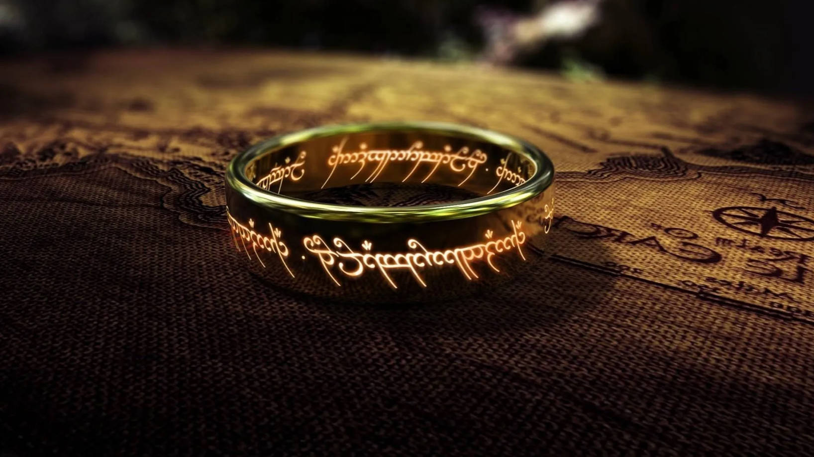
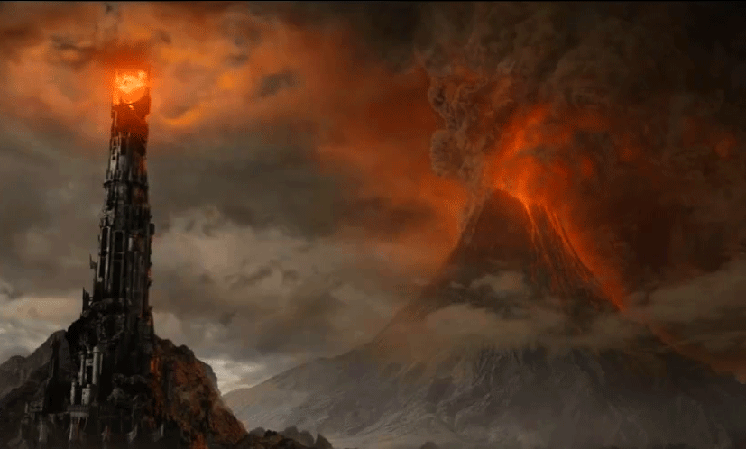
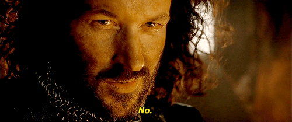

The Lord of the Rings by J. R. R. Tolkien
Something good to read

The One Ring could only be destroyed by the fires of Mount Doom, because that is the place it was made in.

And then Isildur refuses to destroy the one ring.
